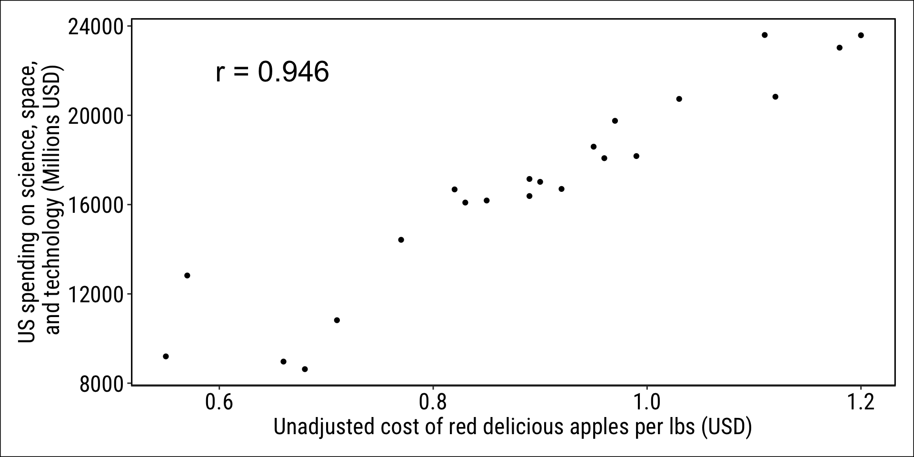
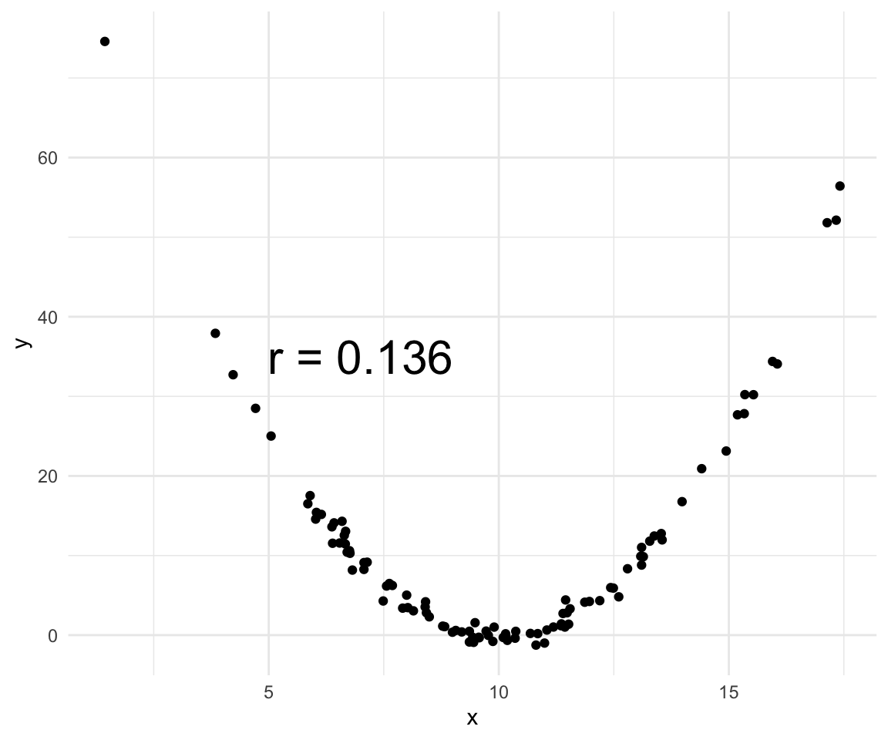
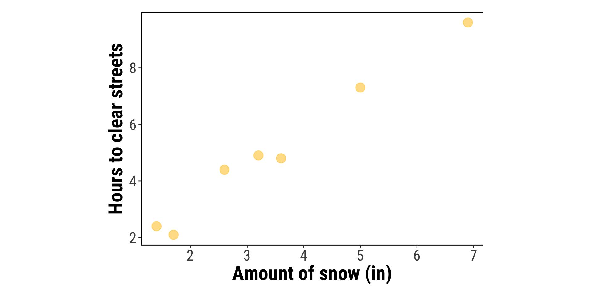
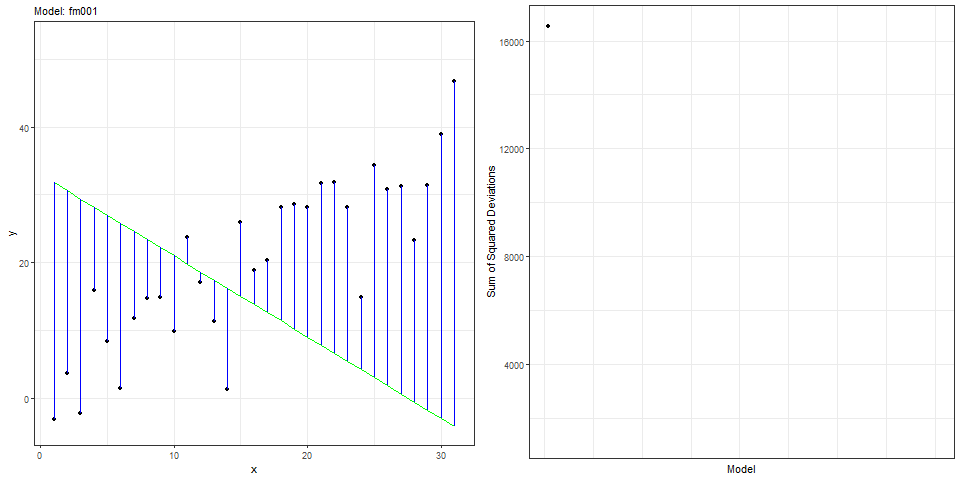
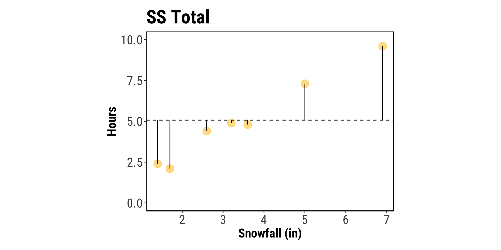
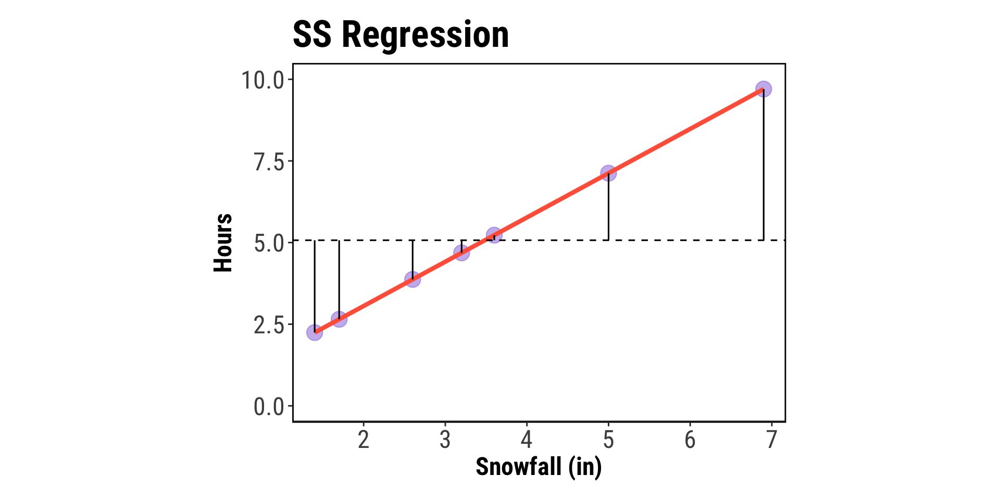
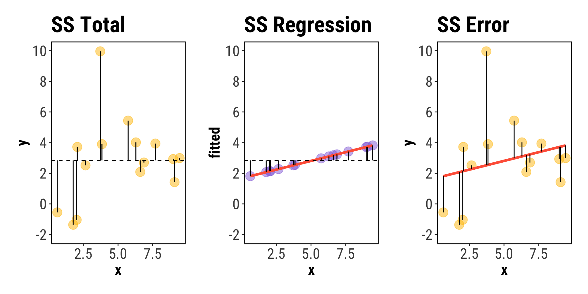

Pearson's product-moment correlation
data: x and y
t = 30.853, df = 48, p-value < 2.2e-16
alternative hypothesis: true correlation is not equal to 0
95 percent confidence interval:
0.9573578 0.9862104
sample estimates:
cor
0.975702 Week 5
Simple linear regression
What we’ll cover today
Simple linear regression
Approaches to linear regression
Experimental vs. observational studies
Correlation
Measuring the relationship between two continuous variables
Simple linear regression
Using least-squares (sum of squares) approach to fitting and testing a model
Approaches to linear regression
The general concept
In regression analyses, we want to understand if there is a statistically clear relationship between two continuous variables, say \(x\) and \(y\).
\(x\) may be a variable that we manipulated experimentally (e.g., temperature). The approach here is experimental
\(x\) may also be a variable that we simply measured (e.g., total rainfall). The approach here is observational
We can also include categorical variables in regression (i.e., ANOVA!)
Correlation/regression are used to infer linkages between variables and quantify the strength of these links
Warning
Correlation ≠ causation!
FYI: read this paper!

Correlation
Correlation is a measure of a linear relationship between our response variable \(y\) and some predictor variable \(x\).
We want to quantify how variables “move together” or how informative one variable is to predict values of another variable.
Just like our other statistical parameters we’ve been discussing, we differentiate between population and sampole correlation parameters!
Population correlation coefficient
- \(\rho = Corr(X, Y) = \frac{Cov(X, Y)}{\sqrt{Var(X)}\sqrt{Var(Y)}}\) is the population correlation coefficient between \(X\) and \(Y\)
\(-1 \leq \rho \leq 1\)
\(\rho = 1\) indicates a perfect positive correlation
\(0 < \rho < 1\) indicates a positive correlation
\(\rho = 0\) indicates no linear relationship
\(-1 < \rho < 0\) indicates a negative correlation
\(\rho = -1\) indicates a perfect negative correlation
Sample correlation coefficient
\(r\) is the sample correlation coefficient and it is calculated similarly to \(\rho\)
\[r = \frac{\sum_{i = 1}^n (x_i - \bar{x}) (y_i - \bar{y})}{\sqrt{\sum_{i = 1}^n (x_i - \bar{x})^2} \sqrt{\sum_{i = 1}^n(y_i - \bar{y})^2}}\]
Note
The same guidelines/parameters about \(\rho\) apply to \(r\)!
Tip
\(r\) is directly related to the \(r^2\) we are all very familiar with! It’s quite literally our sample correlation coefficient squared! We’ll come back to this and show the math a bit later…
How do we calculate correlation?
- Use R
- in R:
my_correlation <- cor.test(x, y)
Beware of spurious correlation!

Where does correlation fail?
- Correlation measures a linear relationship - if your data are not linear correlation will fail to capture the relationship

Where does correlation fail? | A lesson in plotting your data

Where does correlation fail? | A lesson in plotting your data

Simple linear regression
Why can’t we just stop at our correlation coefficient?
If we’ve calculated a \(r\) statistic, we can’t we just report that and be done with it?
While the r value quantifies the correlation between our variables, it tells us nothing about uncertainty or the fit/usefullness of our model because…
Why can’t we just stop at our correlation coefficient?
Linear regression lets us futher build out the model of our system so that we can estimate the strength of a biological relationship rather than simply a mathematical one!
Simple linear regression
Snowfall example
| Amount of snowfall (in) | # of hours to clear street |
|---|---|
| 3.2 | 4.9 |
| 1.4 | 2.4 |
| 2.6 | 4.4 |
| 6.9 | 9.6 |
| 3.6 | 4.8 |
| 1.7 | 2.1 |
| 5.0 | 7.3 |
Question of interest: What is the relationship between the amount of snow fall (\(x\)) and the time it takes to clear the streets (\(y\))?
Simple linear regression
Snowfall example

Simple linear regression
Snowfall example | Step 1: fit a line
The main idea behind linear regression is fitting a straight line to our data (Recall equation for a straight line \(y = mx + b\)):
\[ y = b_0 + b_1x \]
Here \(b_0\) is the y-intercept and \(b_1\) is the slope.
The goal is to find the coefficients that give the line of best fit
Simple linear regression
Snowfall example | Step 1: fit a line
There are a variety of methods to find the coefficients \(b_0\) and \(b_1\) but the most common is least squares.
Find \(b_0, ~b_1\) that minimize the “sum of squares” of our regression line
\[\sum_{i = 1}^n (y_i - \hat{y_i})^2\]
where \(y_i\) is your observed value and \(\hat{y}_i\) is the value \(y\) of the line \(\hat{b}_0 + \hat{b}_1x_i\)
Simple linear regression
Snowfall example | Step 1: fit a line

Simple linear regression
Snowfall example | Step 1: fit a line - regression coefficients
There are equations to find our coefficients though! We don’t have to do it by trial and error!
\[\hat{b}_1 = \frac{\sum_{i= 1}^{n} (x_i - \bar{x}) (y_i - \bar{y})}{\sum_{i = 1}^{n} (x_i - \bar{x})^2}\]
\[= \frac{\sum_{i = 1}^{n} x_i y_i - \frac{1}{n}( \sum_{i = 1}^{n} x_i)(\sum_{i = 1}^{n} y_i)}{\sum_{i = 1}^{n} x_i^2 - \frac{1}{n}(\sum_{i = 1}^{n} x_i)^2}\]
and
\[\hat{b}_0 = \bar{y} - \hat{b}_1\bar{x}\]
Simple linear regression
Snowfall example | Step 1: fit a line - regression coefficients
\[\sum_{i=1}^n x_i = 24.40, ~\sum_{i=1}^n x_i^2 = 107.42, ~\sum_{i=1}^n x_i y_i = 154.07\]
\[\sum_{i=1}^n y_i = 35.50, \sum_{i=1}^n y_i^2 = 222.03\]
Thus
\[\hat b_1 = \frac{154.07-24.40\times 35.50/7}{107.42-24.4\times 24.40/7} = \frac{30.33}{22.37} = 1.356\]
\[\hat b_0 = 35.50/7-1.356\times 24.40/7 = 0.345\]
Or just use R
Simple linear regression
Snowfall example | Step 2: calculate uncertainty
Our model equation is great, but it doesn’t allow us to assess any uncertainty around out predictions. How can we do this?
We model \(y\) as a random variable \(Y\)
Consider \(x\) to be fixed, but \(x\) could be random
Consider the model of \(Y\) conditional on \(x\) such that \(([Y|x])\), so…
\[E(Y|x) = b_0 + b_1x\]
where \(b_0, b_1\) are fixed unknown parameters (intercept and slope) that characterize the relationship between \(x\) and \(y\)
Simple linear regression
Snowfall example | Step 2: calculate uncertainty
We now have a more formal equation for our linear model:
\[Y_i = b_0 + b_1 x_i + e_i\]
\(Y\) is called a dependent variable or a response variable
\(x\) is called an independent variable or covariate
\(e's\) are called errors and are the distance between our observation and fitted line
Tip
This model, like the generalized one we developed for ANOVA, lets us reconstruct our dataset exactly!
Simple linear regression
Snowfall example | Step 3: Evaluate model assumptions
- The model is correct. In this case,
\[E(Y_i) = b_0 + b_1 x_1\]
That is, \(y\) is a function of the linear combination of our \(x\) variables (only 1 in the case of simple linear regression).
- Errors \(e_i\) are independent.
- Errors \(e_i\) have homogeneous variance: \(Var(e_i) = \sigma^2\)
- Errors \(e_i\) have normal distribution: \(e_i \sim N(0, \sigma^2)\)
Simple linear regression
Snowfall example | Step 3: Evaluate model assumptions
We estimate the model our model parameters using the data that we have gathered, such that:
\(b_0, b_1, \sigma^2\) by estimators \(\hat{b}_0, \hat{b}_1, \hat{\sigma}^2\)
\(\sigma^2\) is analagous to MSErr from ANOVA
Tip
Provided our model assumptions are met (via diagnostic plots, etc.), we can go onto testing hypothese about our model parameters!
A quiz!
Let’s check our two-way ANOVA and regression memory from last week…
We’re slowly building up an arsenal of different linear models that we can use to test hypotheses about both differences between samples (ANOVA), and relationships between variables (regression)!
Let’s imagine we did an experiment where we manipulated two categorical variables, temperature and water availability for plants, with two levels (high and low) for each.
- What type of experiment is this called?
- What sort of analysis should we use to test for the effects of temperature and water on our plant response variables? Defend your choice of analysis.
- We fit a model for this experiment with
lm(plant_response ~ temp_trt * water_trt)and print the summary below. What is it telling us? Sketch out a figure that shows approximately what these results look like.
Residuals:
Min 1Q Median 3Q Max
-5.1032 -1.7324 0.1186 1.9541 5.4410
Coefficients:
Estimate Std. Error t value Pr(>|t|)
(Intercept) 15.420 0.812 18.99 < 2e-16 ***
temp_trtWarm 3.180 1.149 2.77 0.008 **
water_trtHigh 4.025 1.149 3.50 0.001 ***
temp_trtWarm:water_trtHigh 2.635 1.625 1.62 0.112
---
Signif. codes:
0 ‘***’ 0.001 ‘**’ 0.01 ‘*’ 0.05 ‘.’ 0.1 ‘ ’ 1
Residual standard error: 2.58 on 36 degrees of freedom
Multiple R-squared: 0.541, Adjusted R-squared: 0.504
F-statistic: 14.1 on 3 and 36 DF, p-value: 1.6e-06Now let’s imagine that we conducted a study where we examined how plant growth responded to a natural temperature variation across the whole biogeographical range of the species.
- Here’s the print out of that linear regression model summary. What is it telling us?
Coefficients:
Estimate Std. Error t value Pr(>|t|)
(Intercept) 12.3845 1.7421 7.11 1.2e-09 ***
temperature_C 0.8532 0.1216 7.02 1.8e-09 ***
---
Signif. codes:
0 ‘***’ 0.001 ‘**’ 0.01 ‘*’ 0.05 ‘.’ 0.1 ‘ ’ 1
Residual standard error: 3.12 on 48 degrees of freedom
Multiple R-squared: 0.506, Adjusted R-squared: 0.495
F-statistic: 49.3 on 1 and 48 DF, p-value: 1.8e-09- We take a look at our residual vs. fitted diagnostic plot to see this. What does this indicate?

- How should we interpret the “significance” of this model given the manner in which the data were collected?
Simple linear regression
Snowfall example | Step 4: Hypothesis testing
In our example, we’re interested in quantifying the relationship between snowfall and cleanup time. We can formalize this research question into a hypothesis!
\(H_0\): There is no association between the amount of snowfall and the number of hours it takes to clear the streets.
\(H_A\): There is an association between the amount of snowfall and the number of hours it takes to clear the streets.
Simple linear regression
Snowfall example | Step 4: Hypothesis testing
Generally, the most common hypothesis tested in regression is if there is a significant association between your \(x\) and \(y\) variables. This can be determined by testing if the slope of the regression is different than 0.
\(H_0 : b_1 = 0\)
\(H_A: b_1 \neq 0\)
To accomplish this, we can use both analysis of variance (ANOVA) or a T-test!
Simple linear regression
Snowfall example | Step 4: Hypothesis testing
Let’s start with ANOVA: Recall that ANOVA stands for “ANalysis Of VAriance”
We want to split up the total variation of our data and describe how much of the variation is explained by the model and how much variation is left unexplained.
We will partition the sum of squares (SS):
\[SS~Total = SS~Regression + SS~Error\]
\[SSTotal = \sum_{i = 1}^{n}(y_i - \bar{y})^2, ~df = n - 1\]

\[SSRegression = \sum_{i = 1}^{n}(\hat{y_i} - \bar{y})^2, ~df = 1\]

\[SSError = \sum_{i = 1}^{n}(y_i - \hat{y_i})^2, ~ df = n - 2\]

\[SSTotal = SSReg + SSErr\]

Poorly fitting model

Simple linear regression
Snowfall example | Step 4: Hypothesis testing
So, to test our hypothesis for the slope, let’s construct our ANOVA table:
| Source | df | Sum of Squares | Mean Square (SS / df) | F |
|---|---|---|---|---|
| Regression | 1 | 41.13 | 41.130 | 239.13 |
| Error | 5 | 0.86 | 0.172 | - |
| Total | 6 | 41.99 | - | - |
We estimate \(\sigma^2\) by \(s^2 = MSError = 0.172\) on \(df = 2\).
\[F = \frac{MSReg}{MSErr} \sim F_{1, ~ n-2}\]
Simple linear regression
Snowfall example | Step 4: Hypothesis testing
So, to test our hypothesis for the slope, let’s construct our ANOVA table:
| Source | df | Sum of Squares | Mean Square (SS / df) | F |
|---|---|---|---|---|
| Regression | 1 | 41.13 | 41.130 | 239.13 |
| Error | 5 | 0.86 | 0.172 | - |
| Total | 6 | 41.99 | - | - |
We can then calculate the tail probability on \(F_{1, 5}\), p-value << 0.01. Reject \(H_0\)! We have strong evidence that the slope is not 0.
Simple linear regression
Snowfall example | Step 4: Hypothesis testing
Alternatively, we can conduct this hypothesis test using a t-test:
\(\hat{b}_1\) is a function of our random variables \(X\) and \(Y\), thus it is itself a random variable
\[\hat b_1 = \frac{\sum_{i=1}^n (x_i-\bar x)(Y_i-\bar Y)}{\sum_{i=1}^n (x_i-\bar x)^2} = \frac{\sum_{i=1}^n (x_i-\bar x) Y_i}{\sum_{i=1}^n (x_i-\bar x)^2}\]
Because \(\hat{b}_1\) is a weighted sum of random distributions, it also has a normal distribution so we can use the t-test to determine if \(\hat{b}_1\) is significantly different from 0.
\[t = \frac{\bar{x} - \mu}{SE} = \frac{\hat{b}_1 - b_1^*}{s_{\hat{b}_1}} = \frac{1.356}{0.0877} = 15.46\]
\(p < 0.01\), so we can reject the null hypothesis (\(H_0: b_1 = 0\))
Simple linear regression
Snowfall example | Step 4: Hypothesis testing
Check out the summary of our lm object to see this in action:
Call:
lm(formula = hours_to_clear_streets ~ snowfall_inches, data = snowfall)
Residuals:
1 2 3 4 5 6 7
0.2159 0.1564 0.5294 -0.1005 -0.4264 -0.5504 0.1755
Coefficients:
Estimate Std. Error t value Pr(>|t|)
(Intercept) 0.34552 0.34688 0.996 0.365
snowfall_inches 1.35579 0.08855 15.311 2.16e-05 ***
---
Signif. codes: 0 '***' 0.001 '**' 0.01 '*' 0.05 '.' 0.1 ' ' 1
Residual standard error: 0.4188 on 5 degrees of freedom
Multiple R-squared: 0.9791, Adjusted R-squared: 0.9749
F-statistic: 234.4 on 1 and 5 DF, p-value: 2.156e-05Caution
This only holds up when our model has a numerator degrees of freedom of 1 (i.e., 1 predictor variable in the model!)
Simple linear regression
Snowfall example | Step 4: Hypothesis testing
We can conduct a similar t-test to assess the significance of our model intercept, this is similar to what we did in 1 and 2-way ANOVA. I’ll spare you the math here, and just jump to the conclusions
If we are testing \(H_0: b_0 = 0\) then the t-test for the intercept can be seen as choosing between \(Y_i = b_1 x_1 + e_i\) (a model with no intercept) and the model \(Y_i = b_0 + b_1 * x_i + e_i\) under the \(H_A\).
We almost always leave the intercept in our models, unless we have a strong biological rationale for forcing the intercept through the origin (0,0).
Simple linear regression
Snowfall example | Step 5: assessing model fit
\(R^2\) can be used to assess model fit
\(R^2 = \frac{SS~Regression}{SS~Total}\)
\(R^2\) represents the proportion of the total SS that is explained by the regression model
Link between \(r\) and \(R^2\)
- Correlation is important in regression analysis
- In lab, you will (or have) learned that \(R^2\) is the proportion of variation in the response variable explained by our experimental factor
- Put mathematically, \(R^2 = \frac{SSTrt}{SSTotal}\)
- For a simple linear regression \(R^2 = r^2\).
- Put another way, \(r = \sqrt{R^2}\)
Simple linear regression
Snowfall example | Step 6: make predictions
Yay! We have a model! We can use it to make predictions, like, how many hours should we expect to clear the streets given 4” of snowfall?
Caution
Be careful! Interpolation (predicting between our observed values) is generally okay, but extrapolation (predicting outside our observed values) may be inaccurate if the linear relationship changes outside the range of our observed variables.